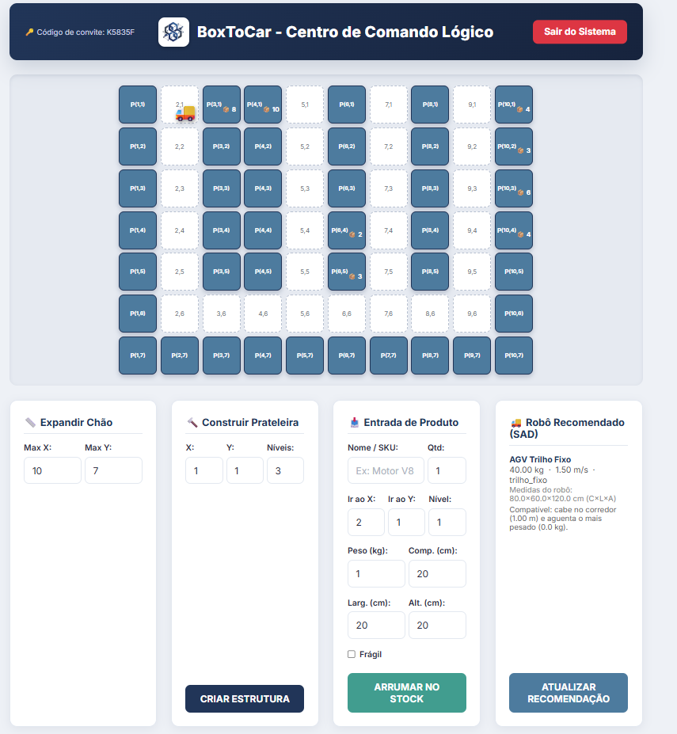
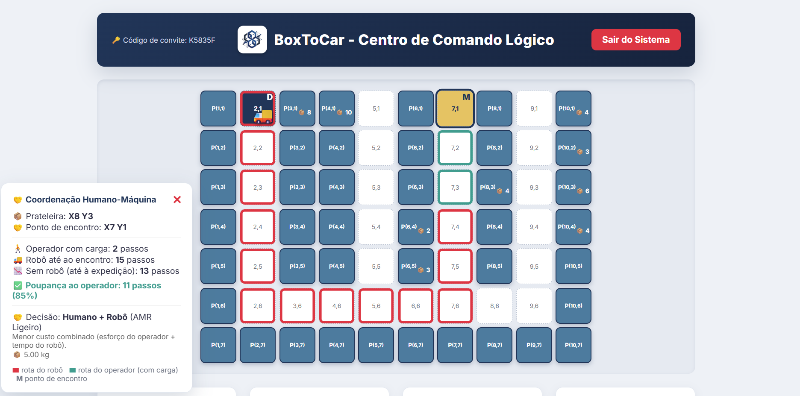
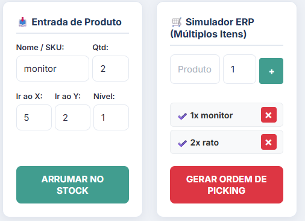
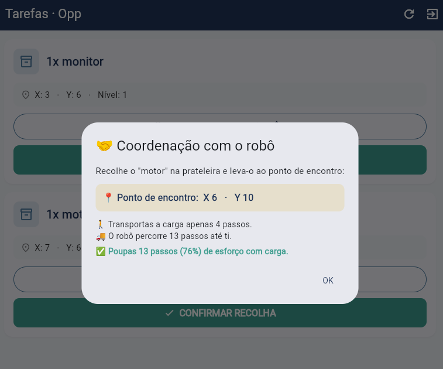

O problema
Andar às voltas com caixas na mão
Na recolha manual de encomendas, o operador percorre o armazém, recolhe os artigos e transporta-os até à zona de expedição. Grande parte do esforço não está na recolha em si, mas no transporte da carga ao longo de todo o percurso de regresso.
A automação total resolve o problema, mas exige robôs reais, navegação, deteção de colisões e um investimento que a maioria dos armazéns pequenos não faz.
A abordagem
Dividir o percurso entre os dois
O BoxToCar mantém a flexibilidade da recolha manual e retira ao operador a parte pesada. O sistema calcula um ponto de encontro no corredor principal: o operador leva o artigo até lá, o robô vai buscá-lo e leva-o ao depósito.
O critério é assimétrico de propósito — minimiza a distância que o humano percorre com carga, aceitando que o robô ande mais. É o robô que não se cansa.
Arquitetura
Três componentes, uma API
Os clientes comunicam com a mesma API REST, partilhando dados e regras de negócio.
-
Backend · Node.js + Express
O núcleo do sistema
Expõe a API REST e concentra, em módulos isolados e testáveis, o cálculo de distâncias (BFS), o catálogo e a recomendação de robôs, a decisão multicritério e os três algoritmos de planeamento.
-
Base de dados · MySQL
Planta, stock e encomendas
Guarda o layout do armazém, o catálogo de robôs, os artigos (peso, dimensões, fragilidade) e as ordens de picking, ligados por chaves estrangeiras reais. As operações com várias alterações correm dentro de transações.
-
Backoffice · HTML, CSS, JavaScript
Mapa interativo do armazém
O gestor constrói prateleiras, importa layouts em JSON, dá entrada de stock (com validação de encaixe) e configura o corredor, as prateleiras e o robô do armazém.
-
Aplicação móvel · Flutter
O lado do operador
Mostra as tarefas pendentes com peso e fragilidade, a decisão humano/robô e o ponto de encontro. A recolha é confirmada no telemóvel.
Catálogo de robôs
Um sistema de apoio à decisão, não um robô fixo
Cada armazém tem um layout diferente — corredores mais ou menos largos, artigos mais leves ou mais pesados. Em vez de assumir sempre o mesmo modelo, o sistema mantém um catálogo de tipos de robô e recomenda automaticamente o mais adequado a cada armazém, filtrando os que cabem fisicamente no corredor e pontuando-os pelo equilíbrio entre capacidade e velocidade. O gestor pode ainda fixar manualmente um robô, sobrepondo-se à recomendação.
| Robô | Navegação | Capacidade | Corredor mínimo |
|---|---|---|---|
| AGV Trilho Fixo | Trilho fixo | 40 kg | 1,00 m |
| AMR Ligeiro | Perímetro | 15 kg | 0,80 m |
| AMR Pesado | Perímetro | 80 kg | 1,20 m |
| Cobot Colaborativo | Livre | 25 kg | 0,60 m |
Decisão e planeamento
Nem tudo é distância
O armazém é representado como uma grelha 2D em que as prateleiras são obstáculos. Uma procura em largura (BFS) calcula distâncias e rotas entre pontos — é a peça geométrica de base, não a decisão em si.
A decisão de usar o robô é multicritério: pondera o tempo de cada agente, a velocidades diferentes, o peso e a fragilidade do artigo face à capacidade do robô. Um artigo demasiado pesado vai para o operador sozinho — não por ser mais rápido, mas porque a opção do robô é fisicamente inviável.
Para atribuir e ordenar um conjunto de recolhas pendentes, comparam-se três algoritmos: um exato (força bruta, só viável para poucas recolhas), uma heurística gulosa e uma meta-heurística de recozimento simulado.
Segurança
Quem vê o quê
A autenticação usa JWT, com o identificador do armazém dentro do token. Nenhum pedido pode indicar o armazém por parâmetro — é sempre derivado do token, o que impede um utilizador de ver dados de outro armazém. O registo de operador exige um código de convite gerado pelo gestor.
As palavras-passe são guardadas como hash bcrypt. As consultas à base de dados são parametrizadas, e produtos/encomendas ligam-se aos artigos por chave estrangeira.
Validação
Resultados
Os três algoritmos de planeamento foram comparados sobre um conjunto de recolhas pendentes (armazém 7×6, 6 recolhas), registando o custo total da solução e o tempo de cálculo.
| Algoritmo | Custo total | Tempo de cálculo | Desvio ao ótimo |
|---|---|---|---|
| Exato | 25,77 s | 895 ms | 0% |
| Guloso | 31,78 s | 3 ms | 23,3% |
| Meta-heurística | 27,77 s | 38 ms | 7,8% |
O padrão esperado confirma-se: o algoritmo exato garante o ótimo mas não escala; a heurística gulosa é sempre rápida mas nem sempre ótima; a meta-heurística aproxima-se do ótimo num tempo muito inferior ao do algoritmo exato. Os testes funcionais cobrem ainda autenticação, isolamento entre armazéns, validação de stock, encaixe físico do artigo na prateleira e acessibilidade do layout.
O sistema
Interfaces




Ligações
Código e documentação
O código-fonte está disponível no repositório. O relatório descreve a arquitetura, o algoritmo de coordenação e os resultados dos testes.